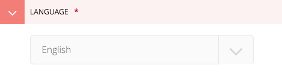

Translation¶
As cfgov-refresh is a Django project, the Django translation documentation is a good place to start. What follows is a brief introduction to translations with the particular tools cfgov-refresh uses (like Jinja2 templates) and the conventions we use.
Overview¶
Translation is generally handled by one form or another of gettext. By convention, this is usually performed in code by wrapping a string to be translated in a function that is either named or aliased with an underscore. For example:
_("This is a translatable string.")These strings are collected into portable object (.po) files for each supported language. These files map the original string (msgid) to a matching translated string (msgstr). For example:
msgid "This is a translatable string."
msgstr "Esta es una cadena traducible."These portable object files are compiled into machine object files (.mo) that the translation system uses when looking up the original string.
By convention the .po and .mo files live inside a locale/[LANGUAGE]/LC_MESSAGES/ folder structure, for example, cfgov/locale/es/LC_MESSAGES/django.po for the Spanish language portable object file for all of our cfgov-refresh messages.
How to translate text in cfgov-refresh¶
This brief howto will guide you through adding translatable text to cfgov-refresh.
1. Add the translation function around the string¶
In Jinja2 templates:
{{ _('Hello World!') }}In Django templates:
{% load i18n %}
{% trans "Hello World!" %}In Python code:
from django.utils.translation import ugettext as _
mystring = _('Hello World!')The string in the call to the translation function will be the msgid in the portable object file below.
2. Run the makemessages management command to add the string to the portable object file¶
The makemessages management command will look through all Python, Django, and Jinja2 template files to find strings that are wrapped in a translation function call and add them to the portable object file for a particular language. The language is specified with -l. The command also must be called from the root of the Django app tree, not the project root.
To generate or update the portable object file for Spanish:
cd cfgov
django-admin.py makemessages -l es3. Edit the portable object file to add a translation for the string¶
The portable object files are stored in cfgov/locale/[LANGUAGE]/LC_MESSAGES/. For the Spanish portable object file, edit cfgov/locale/es/LC_MESSAGES/django.po and add the Spanish translation as the msgstr for your new msgid
msgid "Hello World!"
msgstr "Hola Mundo!"4. Run the compilemessages management command to compile the machine object file¶
cd cfgov
django-admin.py compilemessagesWagtail Considerations¶
All of our Wagtail pages include a language-selection dropdown under its Configuration tab:

The selected language will force translation of all translatable strings in templates and code for that page.